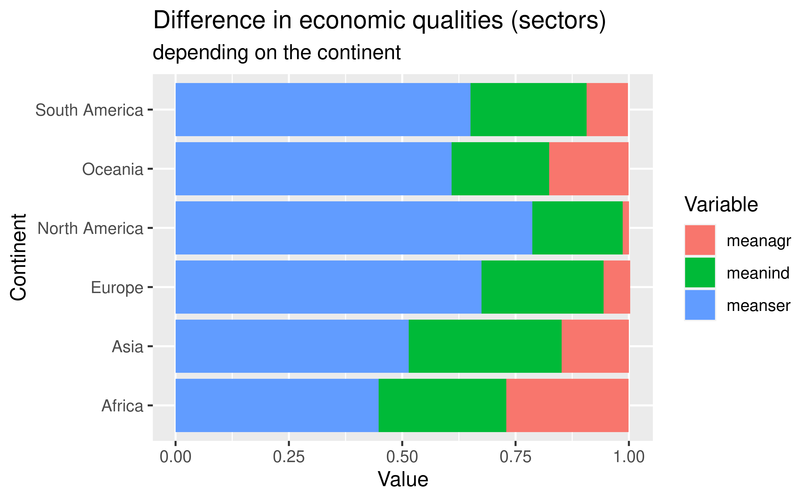

Relationship between geographical and societal qualities
Of countries in the world
Data Pirates
Hamish, Sara, Li Shiyao
University of Edinburgh
2021-12-01
What is the relationship between geographical, economic and societal qualities in countries all over the world?
To break this question down, we’re going to look at 3 specific areas -
- How strong is the correlation between economic and societal qualities
- How impactful are geographical qualities on the development of societal qualities
- What is the relationship between geographical qualities and economic qualities
Linear Regression analysis
## # A tibble: 3 × 5
## term estimate std.error statistic p.value
## <chr> <dbl> <dbl> <dbl> <dbl>
## 1 (Intercept) 11778. 1088. 10.8 3.67e-22
## 2 deathrate 693. 136. 5.08 7.89e- 7
## 3 infant_mortality -236. 19.2 -12.3 7.86e-27## # A tibble: 1 × 12
## r.squared adj.r.squared sigma statistic p.value df logLik AIC BIC
## <dbl> <dbl> <dbl> <dbl> <dbl> <dbl> <dbl> <dbl> <dbl>
## 1 0.432 0.427 7641. 83.6 9.77e-28 2 -2309. 4626. 4639.
## # … with 3 more variables: deviance <dbl>, df.residual <int>, nobs <int>## # A tibble: 3 × 5
## term estimate std.error statistic p.value
## <chr> <dbl> <dbl> <dbl> <dbl>
## 1 (Intercept) 9.07 0.100 90.3 8.31e-176
## 2 deathrate 0.0746 0.0126 5.93 1.16e- 8
## 3 infant_mortality -0.0333 0.00177 -18.8 9.94e- 48linear equation… log(GDP)=9.07 + 0.0746* deathrate - 0.0333* infant_mortality
\[\log(GDP)=9.07 + 0.0746* deathrate - 0.0333* infant mortality\]
circle bar
description of what is happening in the graph and what it shows and why we chose these variables can be added to write up and explained in presentation
Economic sectors vs Location

Plot and text

Table
If you want to generate a table, make sure it is in the HTML format (instead of Markdown or other formats), e.g.,
| country | region | population | area | pop_density | coastline | net_migration | infant_mortality | GDP | literacy | phones | arable | crops | other | climate | birthrate | deathrate | agriculture | industry | service | continent |
|---|---|---|---|---|---|---|---|---|---|---|---|---|---|---|---|---|---|---|---|---|
| Afghanistan | ASIA (EX. NEAR EAST) | 31056997 | 647500 | 48.0 | 0.00 | 23.06 | 163.07 | 700 | 36.0 | 3.2 | 12.13 | 0.22 | 87.65 | 1 | 46.60 | 20.34 | 0.380 | 0.240 | 0.380 | Asia |
| Albania | EASTERN EUROPE | 3581655 | 28748 | 124.6 | 1.26 | -4.93 | 21.52 | 4500 | 86.5 | 71.2 | 21.09 | 4.42 | 74.49 | 3 | 15.11 | 5.22 | 0.232 | 0.188 | 0.579 | Europe |
| Algeria | NORTHERN AFRICA | 32930091 | 2381740 | 13.8 | 0.04 | -0.39 | 31.00 | 6000 | 70.0 | 78.1 | 3.22 | 0.25 | 96.53 | 1 | 17.14 | 4.61 | 0.101 | 0.600 | 0.298 | Africa |
| American Samoa | OCEANIA | 57794 | 199 | 290.4 | 58.29 | -20.71 | 9.27 | 8000 | 97.0 | 259.5 | 10.00 | 15.00 | 75.00 | 2 | 22.46 | 3.27 | NA | NA | NA | Oceania |
| Andorra | WESTERN EUROPE | 71201 | 468 | 152.1 | 0.00 | 6.60 | 4.05 | 19000 | 100.0 | 497.2 | 2.22 | 0.00 | 97.78 | 3 | 8.71 | 6.25 | NA | NA | NA | Europe |
| Angola | SUB-SAHARAN AFRICA | 12127071 | 1246700 | 9.7 | 0.13 | 0.00 | 191.19 | 1900 | 42.0 | 7.8 | 2.41 | 0.24 | 97.35 | NA | 45.11 | 24.20 | 0.096 | 0.658 | 0.246 | Africa |
To conclude
Thank you for listening :)
Hamish - 2 plots + fix, edit write-up, regression Sara - introduction of write up (done), essay plan (done), labs and table (continent and related descriptive columns), background theme Yuki - conclusion, labs, make a plot